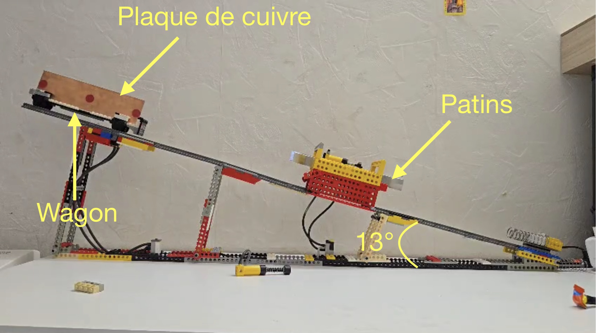

Preparatory Classes Project – Analysis of Braking Systems in Roller Coasters
During my second year of preparatory classes, I worked on a two-person engineering project focused on braking mechanisms used in roller coasters. Our goal was to understand, model, and compare two major braking technologies: friction braking and eddy current (induction) braking.
My partner analysed induction braking, while I focused on friction braking. I studied how mechanical contact, materials, normal force, and heat generation influence braking efficiency. I developed simplified models to predict deceleration and compared them with experimental results.
To validate our work, we built a Lego inclined track on which a small cart could roll freely. At the end of the slope, we installed either friction pads or magnets to reproduce the two braking systems. This simple prototype allowed us to perform controlled measurements of braking distance, speed, and deceleration.
After analysing our datasets, we compared the performance, reliability, and limitations of both braking techniques.
This project strengthened my skills in experimental design, physics-based modelling, data analysis, and teamwork, and helped me develop a practical engineering mindset: designing a system, testing hypotheses, and confronting theory with real-world behaviour.

Photo of the model of our project